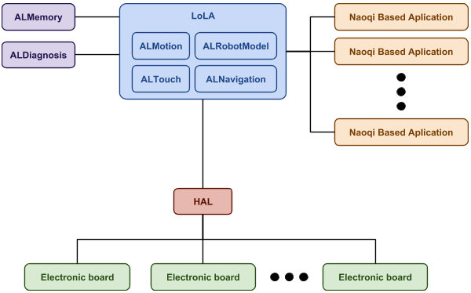

LoLA¶
What is LoLA¶
LoLA is the Low Level Abstraction, and it manages and controls the robotic hardware of the robot.
How it works¶
LoLA is a real-time process. It runs at 83Hz (cycle of 12ms). At each cycle it exchanges data with the hardware.
LoLA executes some NAOqi modules (at 41,5Hz, cycle of 24ms) that handle the high level control and expose data to other NAOqi applications:
Before LoLA (before 2.8)¶
LoLA replaces the DCM, which was running in the naoqi-service process. LoLA and other low level control modules were split from naoqi process to improve safety.
LoLA continues to publish the same data in ALMemory (see: Actuator & Sensor list), but at 2Hz rather than 83Hz. This is API is kept only for backwards compatibility and it is meant to be used only for monitoring and repair.
LoLA removes the possibility to control the robot directly (DCM::set or DCM::setAlias). You must use ALMotion, ALTouch and ALLeds. Before LoLA, DCM low level access were conflicting with these modules in an unpredictable way.
For academic uses, it was allowed to stop ALMotion and control the robot using the onPreProcess or onPostProcess callbacks of DCM. LoLA provides an API built specifically for this use case. It allows to have full control of the robot and for security reasons it is not available for Pepper.
LoLA inside the system¶
HAL¶
HAL is the process that manages the communication with the electronic boards of the robotic hardware. At each cycle (12 ms), LoLA and HAL exchange data.
LoLA¶
LoLA communicates with HAL (every 12ms) to send orders and receive data. It exposes data in ALMemory for retrocompatibility (every 500ms). LoLA also produces data for ALDiagnosis, which is an error diagnostics and reporting mechanism.
Low level modules¶
ALMotion, ALTouch, ALNavigation and ALRobotModel are now hosted inside LoLA. They are executed every cycle (12 ms).
ALMotion real-time computations are done in lola thread, but the bulk of their processing is done at half of LoLA’s frequency in order to limit CPU consumption.
Other NAOqi services that live inside lola process use different (non real-time) threads, that are not synchronized with lola thread.
NAOqi Based Application¶
Applications that use NAOqi API can interact with the modules hosted in LoLA like with any other NAOqi module. For communications, call the functions in the module API.
Another way they can read hardware data is from ALMemory but the refresh rate is at 2Hz.
LoLA Client¶
LoLA client is the part of LoLA that ensures the high level control of the robot and the processing of its sensors.
By default, LoLA client is composed of ALMotion, ALTouch and ALNavigation. On NAO, you can replace the client with your own. The main usage of this is to allow more flexibility for academic purposes (for example: research laboratory or Robocup).
LoLA cycle: